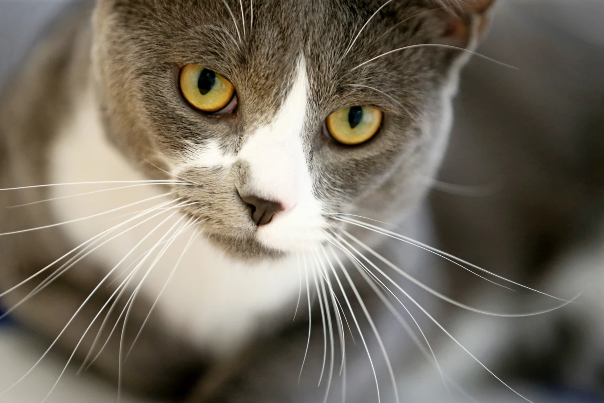

Cats are great pet
animals isn't it?
 The cat (Felis catus) is a domestic species of small carnivorous mammal.[1][2] It is the only domesticated species in the family Felidae and is commonly referred to as the domestic cat or house cat to distinguish it from the wild members of the family.[4] Cats are commonly kept as house pets but can also be farm cats or feral cats; the feral cat ranges freely and avoids human contact.[5] Domestic cats are valued by humans for companionship and their ability to kill vermin. About 60 cat breeds are recognized by various cat registries.[6]
The cat (Felis catus) is a domestic species of small carnivorous mammal.[1][2] It is the only domesticated species in the family Felidae and is commonly referred to as the domestic cat or house cat to distinguish it from the wild members of the family.[4] Cats are commonly kept as house pets but can also be farm cats or feral cats; the feral cat ranges freely and avoids human contact.[5] Domestic cats are valued by humans for companionship and their ability to kill vermin. About 60 cat breeds are recognized by various cat registries.[6]
The cat is similar in anatomy to the other felid species: it has a strong flexible body, quick reflexes, sharp teeth, and retractable claws adapted to killing small prey like mice and rats. Its night vision and sense of smell are well developed. Cat communication includes vocalizations like meowing, purring, trilling, hissing, growling, and grunting as well as cat-specific body language. Although the cat is a social species, it is a solitary hunter. As a predator, it is crepuscular, i.e. most active at dawn and dusk. It can hear sounds too faint or too high in frequency for human ears, such as those made by mice and other small mammals.[7] It also secretes and perceives pheromones.[8]
Female domestic cats can have kittens from spring to late autumn, with litter sizes often ranging from two to five kittens.[9] Domestic cats are bred and shown at events as registered pedigreed cats, a hobby known as cat fancy. Population control of cats may be achieved by spaying and neutering, but their proliferation and the abandonment of pets has resulted in large numbers of feral cats worldwide, contributing to the extinction of entire bird, mammal, and reptile species.[10]
It was long thought that cat domestication began in ancient Egypt, where cats were venerated from around 3100 BC,[11][12] but recent advances in archaeology and genetics have shown that their domestication occurred in the Near East around 7500 BC.[13]
As of 2021, there were an estimated 220 million owned and 480 million stray cats in the world.[14][15] As of 2017, the domestic cat was the second most popular pet in the United States, with 95.6 million cats owned[16][17] and around 42 million households owning at least one cat.[18] In the United Kingdom, 26% of adults have a cat, with an estimated population of 10.9 million pet cats as of 2020.[19]

Etymology and naming
The origin of the English word cat, Old English catt, is thought to be the Late Latin word cattus, which was first used at the beginning of the 6th century.[20] It was suggested that cattus is derived from an Egyptian precursor of Coptic ϣⲁⲩ šau, 'tomcat', or its feminine form suffixed with -t.[21] The Late Latin word may be derived from another Afro-Asiatic[22] or Nilo-Saharan language. The Nubian word kaddîska 'wildcat' and Nobiin kadīs are possible sources or cognates.[23] The Nubian word may be a loan from Arabic قَطّ qaṭṭ ~ قِطّ qiṭṭ.
However, it is "equally likely that the forms might derive from an ancient Germanic word, imported into Latin and thence to Greek and to Syriac and Arabic".[24] The word may be derived from Germanic and Northern European languages, and ultimately be borrowed from Uralic, cf. Northern Sami gáđfi, 'female stoat', and Hungarian hölgy, 'lady, female stoat'; from Proto-Uralic *käďwä, 'female (of a furred animal)'.[25]
The English puss, extended as pussy and pussycat, is attested from the 16th century and may have been introduced from Dutch poes or from Low German puuskatte, related to Swedish kattepus, or Norwegian pus, pusekatt. Similar forms exist in Lithuanian puižė and Irish puisín or puiscín. The etymology of this word is unknown, but it may have arisen from a sound used to attract a cat.[26][27]
A male cat is called a tom or tomcat[28] (or a gib,[29] if neutered). A female is called a queen[30] (or a molly,[31][user-generated source?] if spayed), especially in a cat-breeding context. A juvenile cat is referred to as a kitten. In Early Modern English, the word kitten was interchangeable with the now-obsolete word catling.[32] A group of cats can be referred to as a clowder or a glaring.[33]
Taxonomy
The scientific name Felis catus was proposed by Carl Linnaeus in 1758 for a domestic cat.[1][2] Felis catus domesticus was proposed by Johann Christian Polycarp Erxleben in 1777.[3] Felis daemon proposed by Konstantin Satunin in 1904 was a black cat from the Transcaucasus, later identified as a domestic cat.[34][35]
In 2003, the International Commission on Zoological Nomenclature ruled that the domestic cat is a distinct species, namely Felis catus.[36][37] In 2007, it was considered a subspecies, F. silvestris catus, of the European wildcat (F. silvestris) following results of phylogenetic research.[38][39] In 2017, the IUCN Cat Classification Taskforce followed the recommendation of the ICZN in regarding the domestic cat as a distinct species, Felis catus.[40]